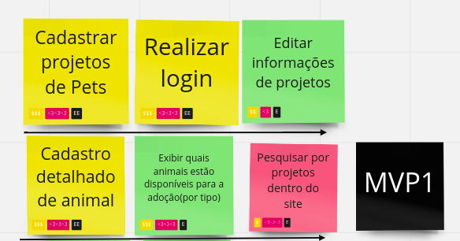
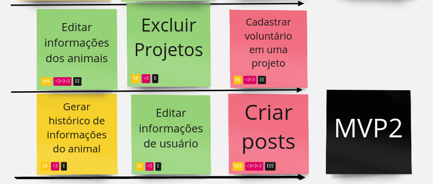

Histórico de Versão
| Data | Versão | Descrição | Autor(es) |
|---|---|---|---|
| 09/08/2022 | 0.1 | Criação do documento | Pedro Helias, Gabriel Marcolino |
| 16/08/2022 | 0.2 | Adicionando histórias de usuário do MVP1 | Gabriel Marcolino |
| 08/09/2022 | 0.3 | Adicionando histórias de usuário do MVP2 | Gabriel Marcolino |
MVP 1
O MVP 1 será composto pelas seguintes funcionalidades.

US01
| US01 | Logar usuário na plataforma |
|---|---|
| Épico | Sessão do Usuário |
| Feature | Acesso/Login a plataforma |
| Descrição | Eu como dono do projeto quero acessar a plataforma usando a conta criada para começar a usar o site |
US08
| US08 | Editar informações do projeto |
|---|---|
| Épico | Sessão do Usuário |
| Feature | Gerenciamento de conta |
| Descrição | Eu como dono do projeto quero editar as informações do projeto para manter as infomaçẽos ataulizadas |
US09
| US09 | Cadastrar um projeto |
|---|---|
| Épico | Sessão do Usuário |
| Feature | Gerenciamento de conta |
| Descrição | Eu como dono do projeto quero realizar o cadastro de um projeto para ter mais controle de gerenciamento e recursos |
US13
| US13 | Realizar cadastro do animal |
|---|---|
| Épico | Interatividade com o sistema |
| Feature | Gerenciamento de cadastro de animal |
| Descrição | Eu como dono do projeto quero realizar o cadastro do animal para facilitar a busca dos usuários para adoções |
US15
| US15 | Exibir animais disponíveis para adoção |
|---|---|
| Épico | Interatividade com o sistema |
| Feature | Gerenciamento de cadastro de animal |
| Descrição | Eu como tutor quero quero ver quais animais estão disponíveis para adoção para ter mais liberdade de escolha |
US25
| US25 | Pesquisar por projetos |
|---|---|
| Épico | Interatividade com o sistema |
| Feature | Interação entre usuários |
| Descrição | Eu como tutor quero pesquisar por outros projetos para buscar o mesmo serviço ou oportunidade |
MVP 2
O MVP 2 será composto pelas seguintes funcionalidades.

US18
| US18 | Realizar a edição de informações do animal |
|---|---|
| Épico | Interatividade com o sistema |
| Feature | Gerenciamento de cadastro de animais |
| Descrição | Eu como dono do projeto quero realizar edição de informações do animal para ter maior controle sobre os animais vinculados ao projeto |
US07
| US07 | Excluir projeto |
|---|---|
| Épico | Sessão do Usuário |
| Feature | Gerenciamento de conta |
| Descrição | Eu como dono do projeto quero excluir projeto para adequar ao estado atualdo projeto |
US22
| US22 | Cadastrar dados para candidatura a adoção |
|---|---|
| Épico | Interatividade com o sistema |
| Feature | Interação entre usuário |
| Descrição | Eu como quero para |
US14
| US14 | Gerar histórico do animal |
|---|---|
| Épico | Interatividade com o sistema |
| Feature | Gerenciamento de cadastro de animais |
| Descrição | Eu como dono do projeto quero gerar histórico do animal para facilitar processos documentais de adoção |
US06
| US06 | Editar dados pessoais |
|---|---|
| Épico | Acesso/Login a Plataforma |
| Feature | Gerenciamento de conta |
| Descrição | Eu como tutor quero editar meus dados pessoais para atualizar meus dados recentes |